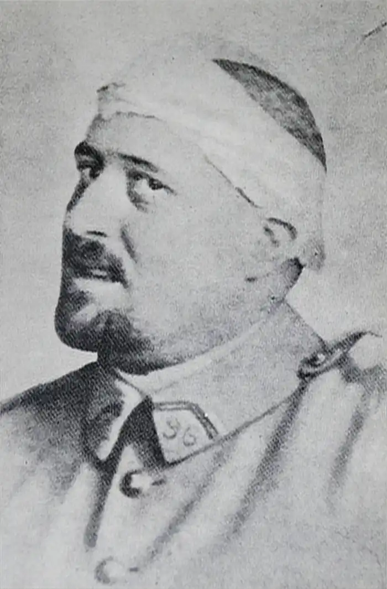
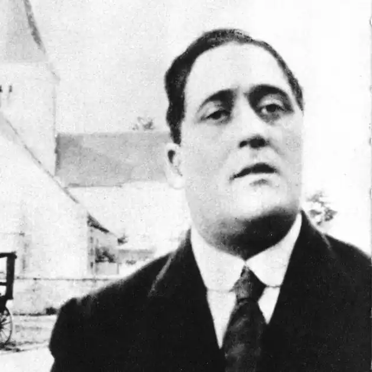

ГІЙОМ АПОЛЛІНЕР
(1880-1918)
На початку XX століття французька поезія почала розширювати коло своїх художніх пошуків. Гійом Аполлінер, як у фокусі, зібрав художні імпульси, що йшли з минулого, і багато в чому визначив розвиток французької поезії на десятиріччя вперед. Справжнє ім'я поета — Вільгельм Аполінарій Костровицький. Народився він у Римі в 1880 році, його рідними мовами були польська та італійська, а французьку він опанував у монастирських школах на півдні Франції. Творчість Аполлінера спиралася на традиції французького фольклору, поезію Ф. Війона та лірику доби Відродження. Поет був прихильником творчості французьких романтиків, а також поетів межі століть — П. Верлена, А. Рембо, С. Малларме. Творчий дебют Г. Аполлінера відбувся на початку століття. Його перші, доволі традиційні поетичні спроби ("Рейнські вірші") були навіяні любовними захопленнями під час мандрівки Німеччиною в 1901 —1902 роках. Зв'язок із романтичною і символістською традицією тут посилюється глибоким емоційним сприйняттям німецького фольклору й образів романтичної поезії, засвоєнням тем і ритмів німецької народної пісні ("Дзвони", "Ніч на Рейні"). Відчуваються у творчості Аполлінера й слов'янські джерела, яким поет завжди надавав великого значення. Використовуючи образ Лорелеї, створений К, Брентано і підхоплений іншими німецькими романтиками, в тому числі Г. Гейне, поет посилює його виразність, драматизує вірш, надає йому динамізму. Надалі традиційність все більше витісняється поетичними новаціями: конкретністю безпосереднього вираження, прозаїзацією вірша, розмовним ритмом, відсутністю розділових знаків. Аполлінер досконало опановує верлібр (вільний вірш) — систему віршування, що з'явилася у французькій поезії наприкінці XIX століття. Верлібр позбавлений звичних ознак поетичного твору: рими, суворого ритму та поділу на строфи. Для верлібру характерні рядки різної довжини, різні дво— і трискладові стопи; ритм може мати перебої. Ім'я Аполлінера дослідники пов'язують із кубізмом у літературі, іноді поєднуючи це явище з літературним футуризмом і називаючи кубофутуризмом. У творчості Аполлінера виявилися властиві кубізмові особливості, і, перш за все, симультанізм (від фр. simultaine — "одночасний") — схильність до одночасного зображення в одній площині різнорідних об'єктів, віддалених, не пов'язаних між собою образів, мотивів, переживань і вражень. Наслідуючи поетів кінця минулого століття, Аполлінер вважав, що магістральний шлях розвитку призводить до створення синтезу мистецтв — музики, живопису та літератури. До своєї першої великої поетичної збірки "Алкоголі. Вірші 1898-1913 pp." (1913) Аполлінер включив вірші, створені в різні часи, у тому числі "рейнські". Вільні вірші тут стоять поряд із віршами з традиційними розмірами. На час видання збірки Аполлінер зовсім відмовився від пунктуації як засобу регулювання ритму вірша. Поет вважав, що читач має сам відчути ритм, емоційну виразність вірша й створити його синтаксичний та інтонаційний малюнок. Спочатку Аполлінер хотів назвати збірку "Вода життя". Але зміна назви на "Алкоголі" робила поета немовби спадкоємцем теми сп'яніння, розвинутої Ш. Бодлером і А. Рембо. У контексті поезії Аполлінера алкоголь поєднується з вогнем і прометеївським началом ("І життя наче спирт полум'яний ти п'єш"). Найвизначнішими у збірці є вірші "Зона", "Міст Мірабо", "Кортеж", "Мандрівник". Ліричність у них поєднується із прагненням до сюжетності, до широкого охоплення сучасних проблем, багатства тем. Збірка відкривається віршем "Зона" (1912), взірцем аполлінерівського "нового ліризму". У французькій мові слово "зона" має додаткове значення — так звуться міські околиці, які кільцем оточують центральну частину Парижа. Паризька "зона" виступає як утілення нового індустріального міста, нового життя взагалі. Свої почуття і переживання Аполлінер змальовує на тлі панорами суспільного життя сучасної Європи. "Зона" написана як вільний, іноді іронічний діалог поета з самим собою; сюди ж умонтовані, ніби кадри кінохроніки, найважливіші події його життя. Поетична свобода реалізується у вірші як на рівні змісту — поет кидає виклик старому світові, ідеалам минулого, так і на рівні форми — він виражає себе в абсолютно вільному вірші: "Старовина набридла нам безмежно / Ти чуєш бекають мости пастушко Ейфелева вежо / У печінках сидять антична Греція і Рим /Автомобіль і той здається тут застарим" ("Зона"). Здається, що поет пише на ходу, під час прогулянки, і його творча лабораторія — на міських вулицях. Незграбний, дисгармонійний, "некрасивий" вірш не можна віднести до певного жанру. Він написаний під враженням невдалого кохання і являє собою сповідь, відверту картину страждання і самотності. Втім, автор, ніби спостерігаючи за собою ззовні, бачить вже героя епічного, стежить за його вчинками, за його рухом. Ліричне "я" перетворюється на "ти". В основі композиції "Зони" — принцип симультанізму. У суцільному потоці, цієї миті, на цій сторінці виникають події, що відбувалися в різний час і в різних місцях. Для Аполлінера така концентрація часу та простору — спосіб створення широкої панорами міста і Всесвіту. Поет збирає на своєму шляху всі прикмети нової реальності: автомобілі, літаки, рекламу і, звичайно, Ейфелеву вежу — цей символ технічного прогресу, і водночас підкреслює фрагментарність поетичної оповіді: "Ти йдеш по Парижу", "А ось ти в заїзді на околиці Праги...", "Ось ти вже в Марселі...", "Ось ти в Амстердамі..." — саме так до вірша вводяться різні "епізоди". Різкі просторові стрибки, зіставлення звичайно незіставлюваних явищ — все це створює ефект, близький до тих, якими незабаром уславляться сюрреалісти. Піднесене й приземлене, поетичне та прозаїчне опиняються поряд, в одній площині. Поступово складається естетична програма того мистецтва, яке Аполлінер визначив терміном "сюрреалізм" (буквально — "над-реалізм"). Уперше це слово прозвучало у травні 1917 року. Літературна течія, яка в подальшому перебере на себе цю назву, сповнила його вже іншим змістом. Для Аполлінера ж "сюрреалізм" — передусім, спосіб пізнання реальності, а не марення чи сон, причому пізнання більш глибокого, ніж дає змогу просте відтворення життя. Що ж із цієї програми було втілено самим поетом? Насамперед, у його поезії відчутна така ж потужна як і в маніфестах, впевненість, що людство — на порозі нової ери: "Іде доба новітніх магій /І скоро скоро ми побачим / Мільйони див мільярди чуд / Які й не снились міфотворцям / Старих вигадливих віків. " Ліричний епос Аполлінера природно передається за допомогою вільного вірша: цього вимагає й фрагментарність обраних деталей, і перенесення уваги з окремих моментів особистої долі на події всесвітнього значення. Могутній поступ історії, надзвичайна велич і різноманітність подій цього століття — війн, революцій, технічних переворотів — усе це стає об'єктом поезії і, у свою чергу, вимагає особливої форми зображення, такої ж багатоманітної. У таких творах, як "Зона" "Вандем'єр", "Є", "Кортеж", "Музика із Сен-Меррі", "Мандрівник" знайдені дійсно нові епічні рішення, коли з простого, "наївного" переліку "того, що є" ("є ворожий підводний човен... є тисяча ялинок навкруги обчухраних оскіллям... є там і сям окремі хрести... є довгі гнучкі руки моєї коханої... є чорнильниця зроблена мною з гільзи...") народжується об'ємна картина людської долі. Пізніше аполлінерівський принцип поєднання "миттєвих спалахів" дійсності оберуть Л. Арагон і П. Елюар, Ю. Тувім і П. Неруда. Але Аполлінер схильний не лише до епічного погляду на дійсність, він — один із найяскравіших, найвишуканіших ліриків XX століття. "Рейнська осінь" (1901), "Дзвони" (1902), "Лорелея" (1904), "Циганка" (1907), "Міст Мірабо" (1912), "Марія" (1912), "Отелі" (1913), "Якби моя влада" (1916), цикл "Життя присвятити коханню" (1917) написані зовсім по-іншому, ніж "Зона" чи "Кортеж". Елегійна просвітленість, замислена філософічність, свіжість безпосереднього почуття, музичність — так поет продовжує багату традицію французької лірики й додає до неї нових барв: "Під мостом Мірабо струмує Сена / Так і любов / Біжить у тебе і в мене / Журба і втіха крутнява шалена" ("Міст Мірабо"). У 1914 році почалася Перша світова війна. Аполлінер вирушив на фронт добровольцем, воював рядовим в артилерії, потім лейтенантом у піхотній частині. Друга велика поетична збірка, видана Аполлінером за життя, дістала назву "Каліграми. Вірші миру і війни (1913-1916)" і вийшла друком 1918 року. Збірка присвячена пам'яті друга-поета, літератора Рене Даліза, вбитого на фронті 1917 року. "Каліграми" складаються з шести розділів і містять 84 поезії. Розділивши книгу на шість частин за хронологічним принципом, Аполлінер ніби підкреслив, що "Каліграми" — ліричний літопис епохи. Послідовність віршів створює щось схоже на проходження кіл пекла, яке завершується коротким оптимістичним апофеозом з кількох звернених у майбутнє віршів 1917-1918 років. Вірші, що увійшли до збірки,— зразок аполлінерівського поетичного експерименту: частина віршів видрукована у вигляді "ліричних ідеограм" чи "каліграм", тобто таким чином, щоб їх текст утворював графічний малюнок. Свої перші ідеограми Аполлінер створив навесні — влітку 1914 року. Такі "малюнки" по-своєму висловлювали аполлінерівську потребу в синтезі словесного та графічного образів. Словесний образ постає на сторінці в просторі, поєднуючи "намальоване" словами з пропусками, з порожнечею, тобто з певним звучанням тексту. Аполлінер не перший використав цю форму вірша. Відомі ідеограми, що належать ще до IV століття до н.е., трапляються вони і в "Гаргантюа і Пантагрюелі" Ф. Рабле. У 1889 році А. Бургард написав вірш у формі Ейфелевої вежі: у ньому було 300 рядків, причому довжина кожного відповідала контуру малюнка. Новаторство Аполлінера — не у винахідливості запропонованих малюнків — вони нескладні: сонце, мандоліна, смужка диму, голуб, фонтан, черевик, а у прагненні залишитися ліричним поетом і в експериментальній формі. Спочатку Аполлінер спробував поєднати тему війни з мотивами кохання (цикл "Вірші до Лу", численні послання до Мадлени). Наївна віра закоханого в те, що "в ім'я нашого щастя схопилися армії", тому й "гранати схожі на зорі", поступово витісняється розумінням трагедії, почуттям спільності з нею, своєї відповідальності.